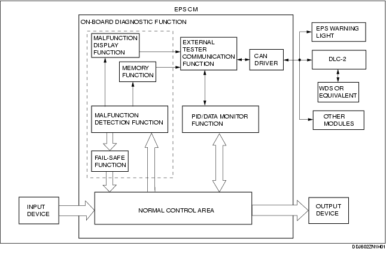

On-board diagnostic system outline [Electric power steering (EPS)]
• The on-board diagnostic system consists of a malfunction detection system that detects abnormalities in input/output signals when the ignition switch is at the ON position and a PID/data monitor function that reads out specified input/output signals.
• The Data Link Connector 2 (DLC-2), which groups together all the connectors used for malfunction diagnosis into a single place, has been adopted, thereby improving serviceability. Diagnosis is performed by connecting the WDS or equivalent to the DLC-2.
• In addition to DTC read-out, the WDS or equivalent is used to clear DTCs using the display screen of the diagnostic tester, and to access the PID/data monitor, providing enhanced malfunction diagnosis and improved serviceability.
Block Diagram
